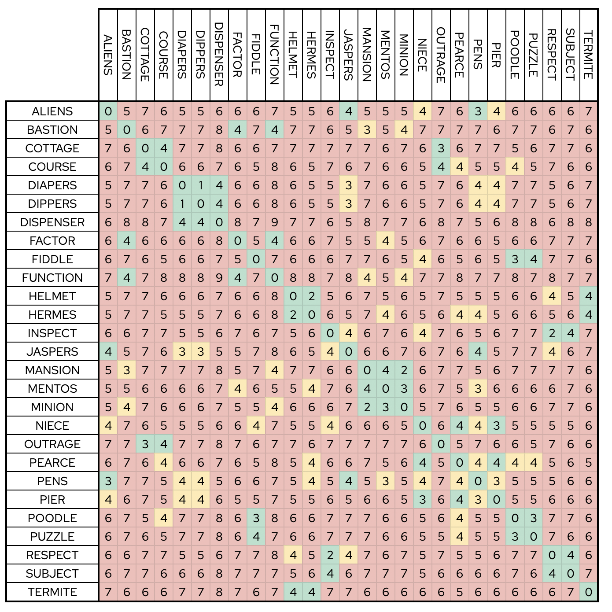
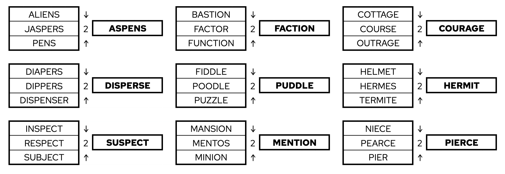
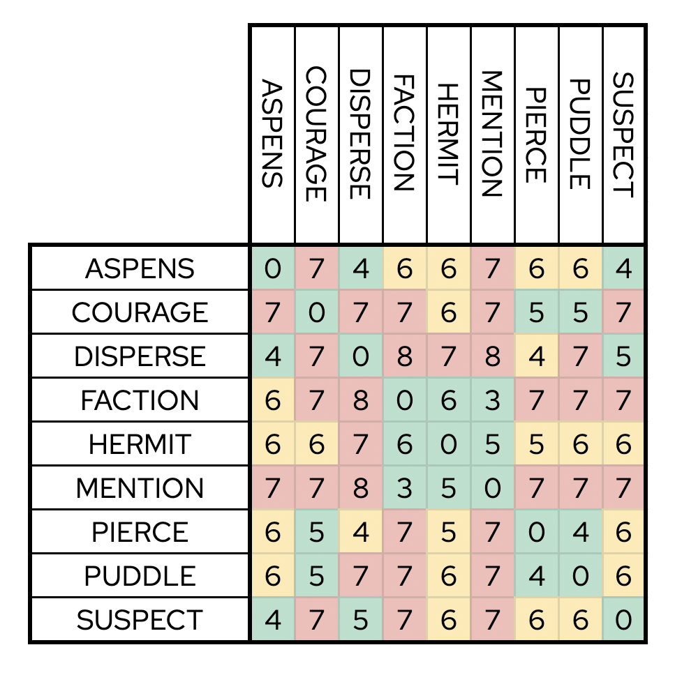
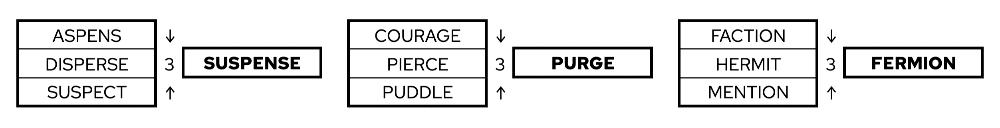
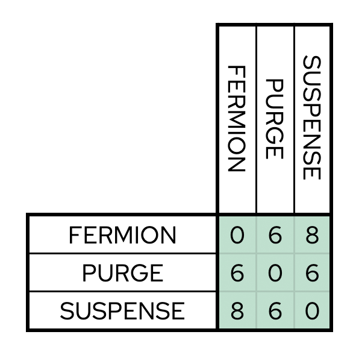
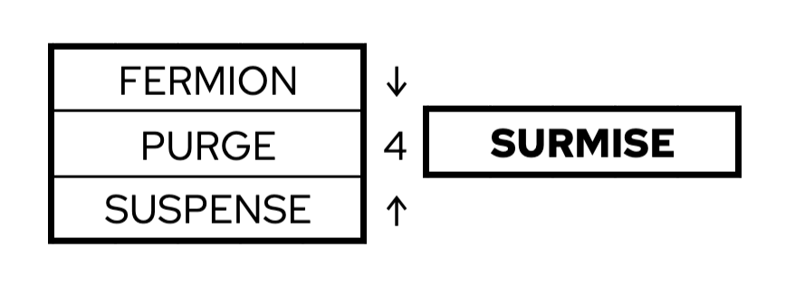
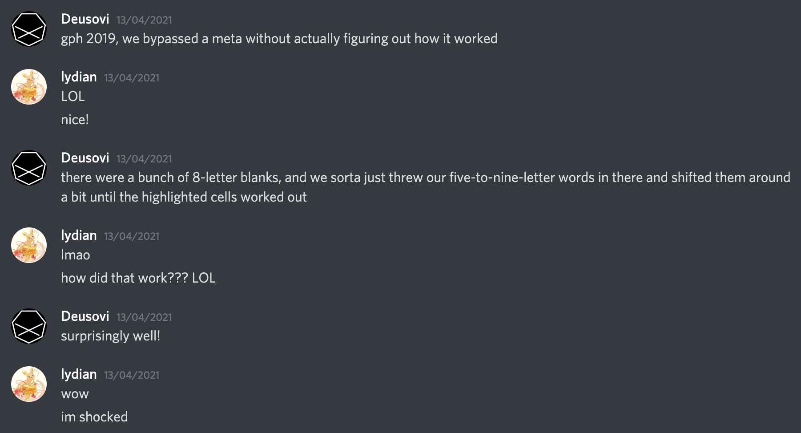

Solution: Audit Instance
Answer: SURMISE
Written by lydian
The puzzle starts out with 30 images, 3 labelled as a sample, and another 27 which, presumably, are the bulk of the actual puzzle. It's possible to identify them, with the alphabetic ordering, and the enumerations facilitating the process:
| MAPLE | SADDLE | TEMPLE |
| ALIENS | BASTION | COTTAGE | COURSE | ||||
| DIAPERS | DIPPERS | DISPENSER | FACTOR | ||||
| FIDDLE | FUNCTION | HELMET | HERMES | ||||
| INSPECT | JASPERS | MANSION | MENTOS | ||||
| MINION | NIECE | OUTRAGE | PEARCE | ||||
| PENS | PIER | POODLE | PUZZLE | ||||
| RESPECT | SUBJECT | TERMITE | |||||
After piecing together the sample, solvers may notice that the clued words are very similar to the word "sample". That, alongside the title (a corruption of Edit Distance) and the given diagram in the bottom of the puzzle, may lead solvers to realize they should combine triplets of words together to find a fourth word. The sample images are all distance 2 from the word "sample", and so is each word of corrupted title compared to what you'd expect, signposting solvers to find triplets of distance 2 with a common word. One way to do this, is with just intuition and trial and error, however if you want to be sure about uniqueness you can use a neat trick to find all the triplets, for a triplet to be able to produce a new word with distance 2 from each of the words, none of the words in the triplet may have a distance of 5 or greater, thus, this makes it possible to narrow down your options and uniquely distribute the triplets. For example, SUBJECT only has a distance of four or lesser with INSPECT and RESPECT, so it must go with them. Following, HELMET only has a distance of four or lesser with HERMES, RESPECT, and TERMITE, but RESPECT is used up, so HELMET must go with HERMES and TERMITE. And so on...

So now you have all the triplets identified, what about the words they produce? Again, this step also seemed to be solved via intuition and trial and error most of the time, but there's also a neat trick you can do here. All triplets have at least a pair with distance 4, let's call them A and B, with C being the extraneous word. Since the goal is to get to D with distance 2, D must be in the middle of the path between A and B, as that path includes all strings with distance 2 from both A and B. So you can take this pool of words and compare with C. And there will always be only one option for D with dictionary-nature that is distance 2 of all three. And of course, coding something to find you a solution is also a valid option. Either way, however one decides to approach it, here are the words you're expected to get:

Now, solvers have another nine words, the obvious thing to do is to recurse. However, solvers will quickly realize that doing it with a distance of 2 is impossible, as these words are further apart, in fact, now the necessary distance is 3, but the general idea is the same, so the previous techniques still apply.

This time, however, two triplets, in particular, ASPENS, DISPERSE, and SUSPECT; and COURAGE, PIERCE, and PUDDLE don't have any two words with the maximum distance from each other that allow using the previous trick. If you really wanna do these logically, my best idea is, since the maximum distance between two words on both triplets is 5, to look at the strings obtained from the path from one to another, in particular the ones with distance 2 from one and 3 from another, and see all possible edits you can make that don't increase any distance to any of the three words past 3, that should lead you to the answer. But, yeah, trial and error or programming I'd imagine are much quicker and more reliable. Either way, these are the words you should reach:

Finally, it's possible to recurse one last time for the final answer, this time with distance 4. The final answer might be harder to get with the longer distance, so here using the previous approach, making use of the fact that FERMION has distance 8 from SUSPENSE works as well, and so does coding. This is what you should get SURMISE, the answer! Which might be fitting if your approach relied on guesstimating the result and then going back to check if the distances actually matched up!

For clarity, I should say that COURAGE, PIERCE, and PUDDLE can lead to PURACÉ and PŪRAE, the former being a Colombian stratovolcano and the latter a declension of the Latin word PŪRUS. PURGE is by a long-shot the most word-like out of these (although, if you do try the others, the solution still uniquely leads to SURMISE)!
Author’s Notes
This puzzle was originally a lot messier, it started with distance 1, but since that's incredibly restrictive, that lead to a horrible fill. Thankfully, Level suggested starting at distance 2 instead, which I think was absolutely the right call. I also made sure to provide enums and the images in alpha order of answer to make the ID process the least headache-inducing as possible, as the focus of the puzzle is on Levenshtein aspect, and missing one of the images would have made this a lot harder to solve, as well, I imagine. Also, the clue for PUZZLE was supposed to be a screenshot of Opening Ceremony, but since nothing was post-proded until later on, I decided to use SPH3's "All The Right Words" instead for testsolving, and then replace it with Opening Ceremony later, but, as you may have guessed, I only remembered this a handful of hours into the hunt, after some teams had already solved the puzzle, so the SPH3 reference stuck! Lastly, in regards to the puzzle, the SAMPLE clues all ended up rhyming / having a similar ending, so my apologies if that led you down a rabbit hole, I had a hard time finding other image-cluable words that could be in that spot that didn't rhyme or share the "LE" ending. The title also was very phonetically similar to what it was corrupted from, however this was done in purpose, to hopefully make it easier for teams to notice it, and of course, if you know what the title is supposed to mean, it means you (hopefully) won't get red herring'd by any phonetic shenanigans, right? (lydian's assumption was not right.)
After coming up with the initial idea for this, I decided to check in with Deusovi, who already knew the concept, if he could just test the distance triangulation aspect, as I had zero clue how hard it'd be. When doing so, he quickly intuited a few distance 3 examples, and later a few distance 4 ones, and shared with me the story of Creative Spacing™️ which is the method he used to solve the triplets i gave him to test the mechanic:

So it was very fun for him to put this technique to use again (this time on a puzzle that was intended to be solved this way) and for me to find out about this story. And I think this might have been one way a lot of teams approached this puzzle, so congrats, now you know how to bypass metas without figuring out how they work! Hope you made good use of the technique on Candela's meta!
And that's this puzzle, I'm really happy with how it turned out at the end, woefully Louvre annoyed edit distance :)